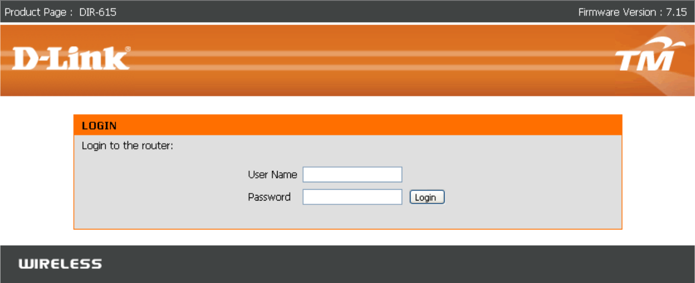
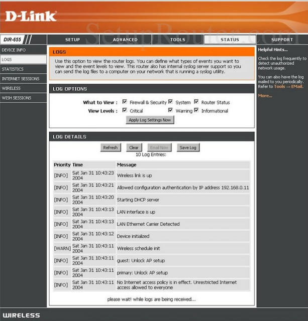
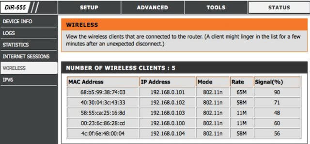
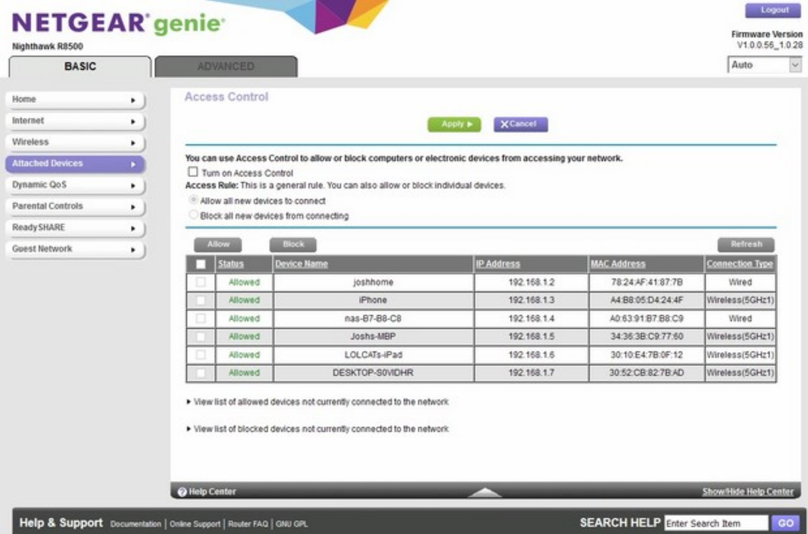

Network and MITM attacks
Router admin interface
After we've determined what our IP is the next step is to try and gain access to the router admin interface to ensure there's no network logging happening by the router itself. Once we've determined there's no logging in place we can then view the network configuration in order to determine how many people are on the network and what type of devices are connected to it.
Every network is different but if you've been assigned an IP of 192.168.X.X then we can assume everything has been left on the default settings and if your IP is in a different range this is OK for now.
Most, if not all, routers will have a default IP of 192.168.X.1 or 192.168.X.2. Since we know most router manufacturers are shipped with the default settings we can assume
MOST
people won't change these.
Whatever your assigned IP is once you've connected to a Wi-Fi network we can assume we know the IP of the router based on the last paragraph in order to attack the router admin interface. You got me?
If your IP is 192.168.24.54 then we can assume the router has an IP of 192.168.24.1.
If your IP is 192.168.3.44 then we can assume the router has an IP of 192.168.3.1.
If your IP is 192.168.128.90 then we can assume the router has an IP of 192.168.128.1 and so on…
Here's some methods to determine the IP of the router regardless of what your IP is assigned to.
Windows
ipconfig | findstr /i "Gateway"
macOS
netstat -nr | grep default
Linux/Kali
ip route | grep default
I cannot stress enough that if you're encountering issues you should be running Kali as your host machine booting directly from USB when we come to Chapter 10.
Ok now I want you to find the IP of your machine (learned from last chapter), find your router IP, and try to access your router admin interface with your web browser to see what's presented to you. Each router login page is different and some routers may not even request a username or password but for the majority you'll encounter in the wild you will be asked for a username and password in order to access the admin interface. You should also note down the model number of the router you're targeting if it displays it to you when you're at the login page in order to help determine what the default credentials are for that specific make/model router. Login to your router now to see what is displayed to you.
To access the router admin page find your router IP and put the router IP into the URL of your web browser then hit enter.
Knowing how to access the router admin login page can help you tailor your attacks against targets of interest on the network. For example, since you know the router make/model and you're able to view the router admin login page you can clone this website for your own uses and launch a MITM attack re-directing all the sheep to your trap. You want to make it appear very similar in design, layout, color scheme, etc.
When you're launching a MITM attack and re-directing everyone on the network to your attack landing page make it appear more legitimate by making it look like it's an actual router firmware update page that is required to access the internet. You want to social engineer the owners of the Wi-Fi or people connected to the network in thinking that their router requires an update to access the internet. Of course, when they click "Update Firmware" they mistakenly download malware right to their faces. Get into that mindset of how you're going to trick people to maximize your chance of infecting them with your RAT, ransomware, and other ghoulish goodies ye be using because social engineering is the key to hacking an individual or organization these days.
You don't have to target company servers which have a higher chance of being properly configured, sometimes, so we want to target lower easier targets. Maybe we sit in coffee shop with Alfa network card targeting business across street. We hacked on network and now doing some fuckery with MITM attacks and re-directing everyone to our attack page. This means we're targeting Alice at the receptionist desk who handles all the appointments for the day at the spa. She logs onto to her computer and notices when she tries to use the internet she keeps getting re-directed to this router update webpage. She asks her fuck face boss about it but they both don't know shit so they check the flashing blinking light thingy known as a "router" by Alice's desk. The name on the router will match the name on the web page requiring an update. So she clicks "Update Firmware" and downloads the setup file to her Desktop and executes it and FUCKING BOOOOOMMMMMMMMMMMMM ransomware infection pay $200 USD or you do not pass GO.
Moving along…
In my next example we know that my IP is 192.168.0.7 so we can assume the router is on 192.168.0.1. In my web browser I would type http://192.168.0.1 in the URL and hit ENTER. I would then be greeted with the router admin interface login page which can be seen below.

As you can see from the screenshot above the router page we're being greeted with is a D-Link router login page. This is the default login page for a D-Link router that will be presented to you when accessing it from http://192.168.0.1. As you can see it's requesting a "User Name" and "Password" before being able to access the router admin interface. Like we talked about before if you're on a 192.168.X.X subnet then we can assume everything has been left on the default settings which %99.9 of the time includes the default login credentials to the router. It's very rare that the average user changes any of these so we'll target the lowest hanging fruit and try the default credentials to gain access to the admin interface.
How the fuck do you find the default credentials for routers you ask? Fortunately for you people have already put together a massive list for you that's available at:
https://www.routerpasswords.com
https://192-168-1-1ip.mobi/default-router-passwords-list
Make sure you're entering the right default credentials and double check the spelling to ensure you're not being a retard. If they haven't changed the default credentials to their router you'll be granted access to the admin interface. If this is the case, then you're in! Give yourself a pat on the back.
You should be trying the default credentials on the router every time you're on a new network (depending on your goals). You'll soon realize that most default credentials contain combinations of admin:password, admin:admin, cusadmin:cusadmin, admin:NOPASSWORD, etc. When you've done this long enough plugging those default credentials in first try tends to be successful.
OK now I want you to think about your internet, your router, your "cyber" surroundings, the companies that provide internet in your area, and what they supply to you when you sign up with them. Some Internet Service Providers (ISP) send a modem but you have to buy the Wi-Fi router yourself. Others send you both the router and modem whereas others send one device that's both your modem and router all in one. My point is any modern "router" is going to come with a pre-set password, usually. You know when you sign up with a new internet provider they send you the modem/router and a piece of paper that contains the pre-set password to the Wi-Fi network or router admin? Maybe some of you understand what I'm saying and maybe some don't. Depending where you live in the world this will happen. Anyways, the point is if you know that when you sign up with company XYZ and they supply the internet devices (router/modem) they usually supply a long complex password to access your Wi-Fi network. If you know this then you know you're probably not hacking into the router admin interface anytime soon based on the pre-set password complexity. If that's the case you must phish the owner or individual who would know this of course.
Getting back on track we'll assume you've gained access to the admin interface to the router. Remember, you should be following along with this course and performing this on a network that you're able to access the admin interface regardless if the default credentials work or not since you'll know them as it's your own Wi-Fi network. If you're trying this on a hacked Wi-Fi network and cannot get into the admin interface with the default credentials then please refer to Chapter 8.
Each router is different but they usually have the same setup. We want to determine if the router is logging anything and if so we want to disable that to help hide our activities while on the network. No point in committing some cyber theft from a hacked Wi-Fi and leaving logs/digital footprints behind on the router. For the examples used I'm still using the D-Link router admin login page. Once logged into the interface I would need to select "STATUS" and then "LOGS". Again, each router may be slightly different so you'll need to look for similar settings as each router does have them. Here we can see what's being logged and disable it accordingly.

Every time you get onto a Wi-Fi network it's best to log into the admin interface of the router and determine what's being logged, if anything at all. Thankfully the default settings of most routers have logging disabled, but we want to ensure we're not being watched. You don't necessarily need to do this every time you get onto a network but depending on what you're doing and whether or not your paranoia level is 9000 you might want to consider it.
While you're in the admin interface you can also determine who's connected to the network and see what type of devices are connected to it. This is great for when you're at a coffee shop or similar and want to target a specific person. Let's say you see this business suit looking mother fucker with a Bitcoin sticker on his laptop using a MacBook Air. Maybe he's the only one using a MacBook in the coffee shop so you want to determine his IP and target him directly in order to compromise his machine, infect him with your RAT, steal his Bitcoins, and place an order for 1000 grams of pure cocaine from your darkmarket of choice. I may have a drug problem.
By seeing who's connected on the network, their IP, and their associated device you can now focus you're attacks on that specific person making it a little easier for you.
Here's an example of the clients connected to a D-Link router and what's displayed through the router settings.

Here's an another example of what clients are connected when logged into the admin interface of a NetGear router.

As you can see some routers will display the type of client connected to the network and allow you to profile who's on the network whereas some routers show minimal information.
The key points of this chapter are:
How to find the router IP.
If you're able to access the router administrator interface.
Are your actions being logged?
How many people are on the network?
What type of devices are on the network?
Are the devices on the network something that you're able to target (IE: other computers/laptops and not Xbox, PlayStation, Nintendo Switch, etc.)
Once we've determined all of this we can continue on our merry fucking way.
Click to continue to Chapter 5